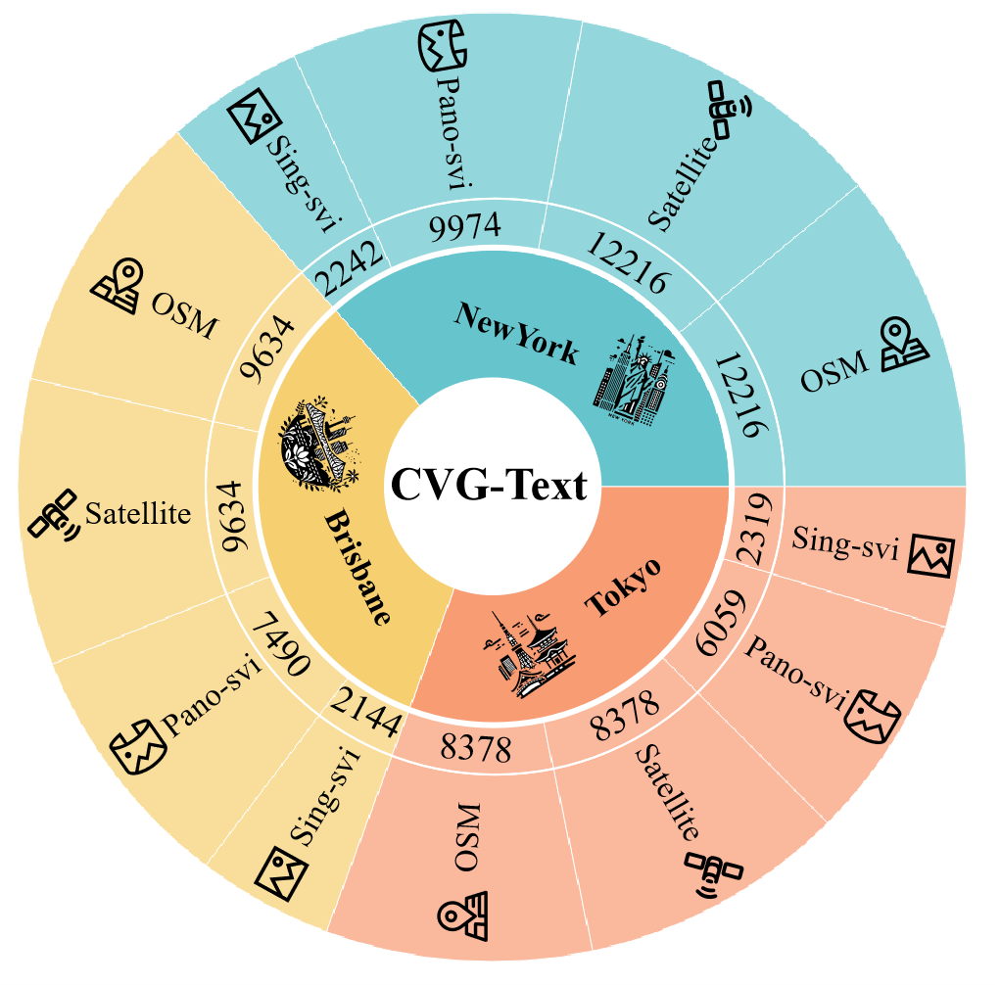
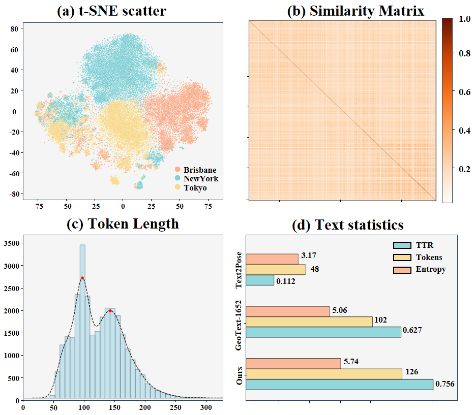

Datasets
New York
Brisbane
Tokyo
We introduce CVG-Text, a multimodal cross-view retrieval localization dataset designed to evaluate text-based scene localization tasks. CVG-Text covers three cities: New York, Brisbane, and Tokyo, encompassing over 30,000 scene data points. The data from New York and Tokyo is more oriented toward urban environments, while the Brisbane data leans towards suburban scenes. Each individual point includes corresponding street-view images, OSM data, satellite images, and associated scene text descriptions.

